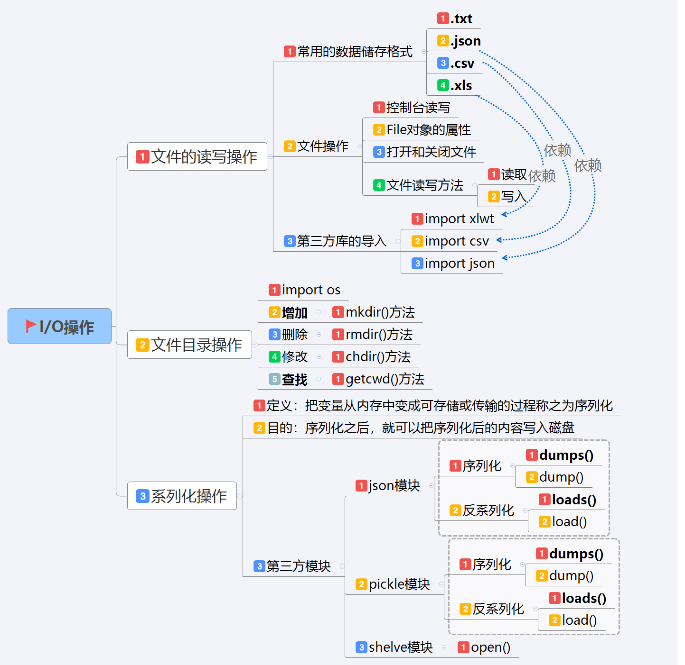
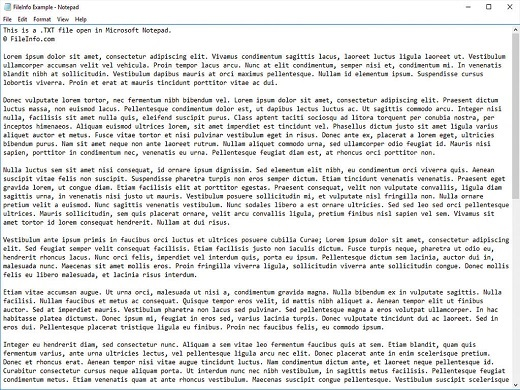
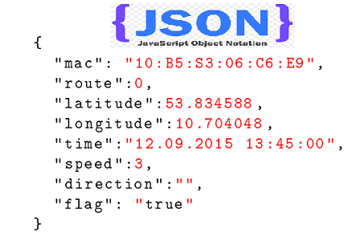
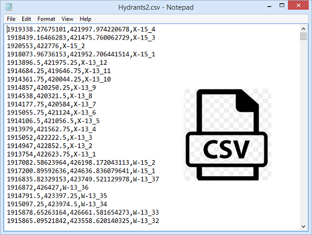
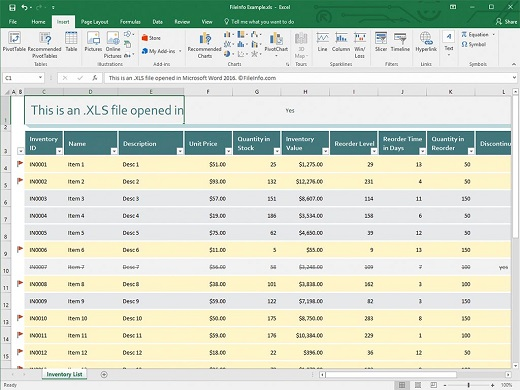
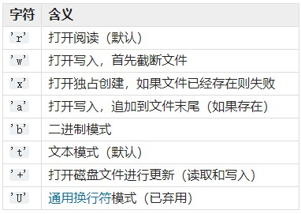
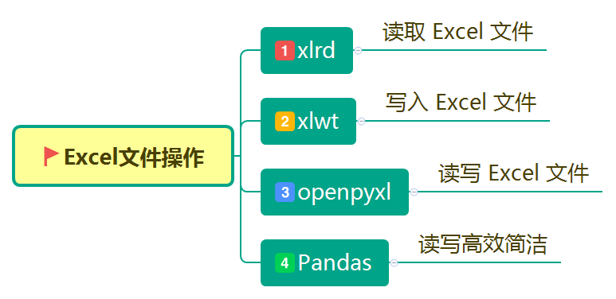
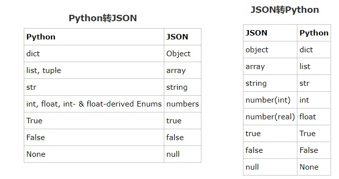
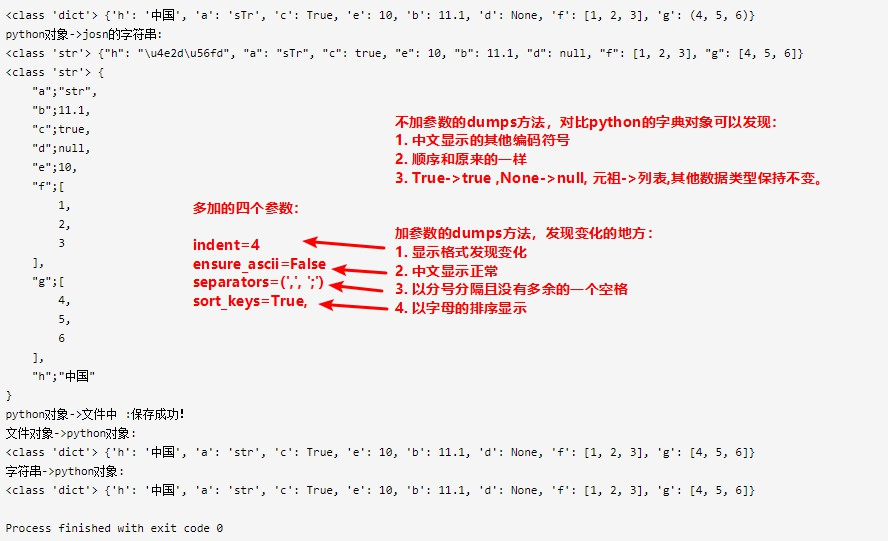
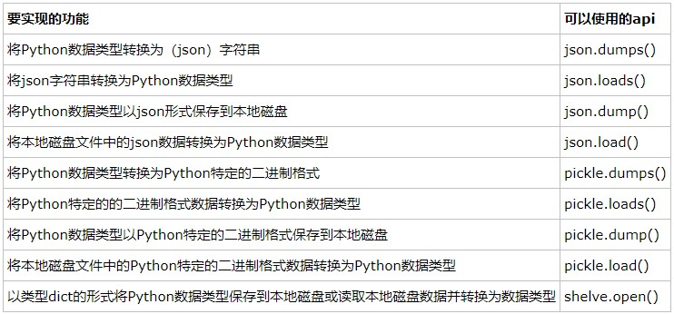

I/O在计算机中是指Input/Output，也就是Stream(流)的输入和输出。这里的输入和输出是相对于内存来说的，Input Stream（输入流）是指数据从外（磁盘、网络）流进内存，Output Stream是数据从内存流出到外面（磁盘、网络）。程序运行时，数据都是在内存中驻留，由CPU这个超快的计算核心来执行，涉及到数据交换的地方（通常是磁盘、网络操作）就需要IO接口。

文件的读写操作
文件读写实现原理
文件读写就是一种常见的IO操作。那么根据上面的描述，可以推断python也应该封装操作系统的底层接口，直接提供了文件读写相关的操作方法。
由于操作I/O的能力是由操作系统提供的，且现代操作系统不允许普通程序直接操作磁盘，所以读写文件时需要请求操作系统打开一个对象（通常被称为文件描述符–file descriptor, 简称fd），这就是我们在程序中要操作的文件对象。
通常高级编程语言中会提供一个内置的函数，通过接收“文件路径”以及“文件打开模式”等参数来打开一个文件对象，并返回该文件对象的文件描述符。因此通过这个函数我们就可以获取要操作的文件对象了。这个内置函数在Python中叫open(), 在PHP中叫fopen()。
文件读写操作步骤
不同的编程语言读写文件的操作步骤大体都是一样的，都分为以下几个步骤：
- 打开文件，获取文件描述符
- 操作文件描述符,读/写
- 关闭文件,close方法
需要注意的是：文件读写操作完成后，应该及时关闭。
- 一方面，文件对象会占用操作系统的资源；
- 另外一方面，操作系统对同一时间能打开的文件描述符的数量是有限制的。
常用数据格式储存
- TXT是微软在操作系统上附带的一种文本格式，是最常见的一种文件格式 。
 - JSON(JavaScript Object Notation) 是一种轻量级的数据交换格式。 易于人阅读和编写。格式如下所示,非常类似Python的字典形式：
 - CSV(Comma-Separated Values,逗号分隔值)其文件以纯文本形式存储表格数据（数字和文本）。CSV文件由任意数目的记录组成，记录间以某种换行符分隔；每条记录由字段组成，字段间的分隔符是其它字符或字符串，最常见的是逗号或制表符。
 - Microsoft Excel是Microsoft为使用Windows和Apple Macintosh操作系统的计算机编写的一款电子表格软件。直观的界面、出色的计算功能和图表工具，再加上成功的市场营销，使Excel成为最流行的个人计算机数据处理软件。
文件操作
控制台I/O
读取键盘输入：内置函数input([prompt])，用于从标准输入读取一个行，并返回一个字符串（去掉结尾的换行符）。
1
i = input("Enter your input:")
印到屏幕：最简单的输出方法是用print语句，你可以给它传递零个或多个用逗号隔开的表达式。
1
print([object, ...][, sep=' '][, end='endline_character_here'][, file=redirect_to_here])
- sep表示分割符
- end表示结束符
- file表示重定向文件
- 如果要给sep、end、file指定值必须使用关键字参数。
1
2print('hello', 'world', sep='%') # 输出 hello%world
print('hello', 'world', end='*') # 输出 hello world*，并且不换行
打开和关闭文件
使用内置函数open()，创建file文件对象。1
file=open(file,mode ='r',buffering = -1,encoding=None,errors=None,newline=None,closefd =True,opener=None)
- file：一个类似于路径的对象，它提供要打开的文件的路径名（绝对或相对于当前工作目录）或要打包的文件的整数文件描述符。
- mode：是一个可选字符串，用于指定文件打开的模式 。它默认为’r’，这意味着开放以文本方式阅读。
 - buffering：是用于设置缓冲策略的可选整数。通过0切换缓冲关闭（仅在二进制模式下允许），1选择行缓冲（仅在文本模式下可用）以及> 1的整数，以指示固定大小的块缓冲区的大小（以字节为单位）。
- encoding：是用于解码或编码文件的编码的名称。这只能用于文本模式。默认编码是平台相关的（无论locale.getpreferredencoding()返回），但可以使用Python支持的任何文本编码。
以上是比较常用的参数，下面的参数只做了解即可：
- errors：是一个可选字符串，指定如何处理编码和解码错误 - 这不能用于二进制模式。有多种标准错误处理程序可用（列在“ 错误处理程序”下），但已注册的任何错误处理名称 codecs.register_error()也是有效的。标准名称包括：
strict如果存在编码错误，则引发异常。默认值None具有相同的效果。ignore忽略错误。请注意，忽略编码错误可能会导致数据丢失。replace导致替换标记（例如’?’）被插入有错误数据的地方。surrogateescape会将任何不正确的字节表示为Unicode专用区域中的代码。xmlcharrefreplace仅在写入文件时才受支持。编码不支持的字符将替换为适当的XML字符引用&#nnn;。backslashreplace用Python的反斜杠转义序列替换畸形数据。namereplace（也仅在写入时才支持）用换\N{…}码序列替换不支持的字符。
- newline：控制通用换行符模式的工作方式（仅适用于文本模式）。它可以是None，’’，’\n’，’\r’，和 ‘\r\n’。
- closefd：是False文件描述符而不是文件名，那么文件关闭时底层文件描述符将保持打开状态。如果给定文件名，closefd必须是True（默认），否则会引发错误。
- opener：可以通过传递可调用的opener来使用自定义opener。然后通过调用opener（file，flags）来获得文件对象的底层文件描述符。
File对象的属性
一个文件被打开后，你有一个file对象，你可以得到有关该文件的各种信息。以下是和file对象相关的所有属性的列表：
| 属性 | 描述 |
|---|---|
| file.closefd | 返回true如果文件已被关闭，否则返回false |
| file name | 返回文件的名称 |
| file.mode | 返回open中的mode参数配置 |
| file.buffer | 返回open中的buffer参数配置 |
| file.encoding | 返回open中的encoding参数配置 |
| file.errors | 返回open中的errors参数配置 |
| file.line_buffering | 返回open中的buffering参数配置 |
| file.newlines | 返回open中的newlines参数配置 |
代码测试如下：1
2
3
4
5
6
7
8
9file = open('demo.txt','r',encoding='utf8',)
print("是否关闭：",file.closed)# 是否关闭： False
print("文件名称：",file.name)# 文件名称： demo.txt
print("访问模式：",file.mode)# 访问模式： r
print("文件缓冲：",file.buffer)# 文件缓冲： <_io.BufferedReader name='demo.txt'>
print("文件编码：",file.encoding)# 文件编码： utf8
print("错误处理：",file.errors)# 错误处理： strict
print("行缓冲：",file.line_buffering)# 行缓冲： False
print("行换符：",file.newlines)# 行换符： None
File读写操作
file对象使用open函数来创建，下面列出了file对象常用的函数。
建立一个demo.txt文件对上述方法进行实际操作，demo.txt的内容如下，是python之道。1
2
3
4
5
6
7
8
9
10
11
12
13
14
15
16
17
18
19
20
21
22import this
print(this)
---------------------------
Beautiful is better than ugly.
Explicit is better than implicit.
Simple is better than complex.
Complex is better than complicated.
Flat is better than nested.
Sparse is better than dense.
Readability counts.
Special cases aren't special enough to break the rules.
Although practicality beats purity.
Errors should never pass silently.
Unless explicitly silenced.
In the face of ambiguity, refuse the temptation to guess.
There should be one-- and preferably only one --obvious way to do it.
Although that way may not be obvious at first unless you're Dutch.
Now is better than never.
Although never is often better than *right* now.
If the implementation is hard to explain, it's a bad idea.
If the implementation is easy to explain, it may be a good idea.
Namespaces are one honking great idea -- let's do more of those!
测试的脚本为demo.txt1
2
3
4
5
6
7
8
9
10
11with open('demo.txt','r+') as file:
print("光标起始位置：",file.tell())# 光标起始位置： 0
print("光标移动字符：",file.seek(10))# 光标移动字符： 10
print('现在光标的位置：',file.tell())# 现在光标的位置： 10
print('恢复光标起始位置：',file.seek(0))# 恢复光标起始位置： 0
print('光标所在的一行：',file.__next__())# 光标所在的一行： import this
print('读取十个字符：',file.read(20))# 读取十个字符： print(this)--------
print('读取整行：',file.readline())# 读取整行： ---------------------------
print('读取所有行并储存为列表：',file.readlines())# 读取所有行并储存为列表： ['Beautiful is better than ugly.\n', 'Explicit is better than implicit.\n', 'Simple is better than complex.\n', 'Complex is better than complicated.\n', 'Flat is better than nested.\n', 'Sparse is better than dense.\n', 'Readability counts.\n', "Special cases aren't special enough to break the rules.\n", 'Although practicality beats purity.\n', 'Errors should never pass silently.\n', 'Unless explicitly silenced.\n', 'In the face of ambiguity, refuse the temptation to guess.\n', 'There should be one-- and preferably only one --obvious way to do it.\n', "Although that way may not be obvious at first unless you're Dutch.\n", 'Now is better than never.\n', 'Although never is often better than *right* now.\n', "If the implementation is hard to explain, it's a bad idea.\n", 'If the implementation is easy to explain, it may be a good idea.\n', "Namespaces are one honking great idea -- let's do more of those!"]
print('写入字符串(不会自动换行)：',file.write('\n'+"perfect!"))# 写入字符串(不会自动换行)： 9
file.writelines(['2','1','2','3','4'])# perfect!21234
常用的读写操作代码1
2
3
4
5
6
7
8
9
10# 如果只读模式为r，如果读写则r+
with open('demo.txt','r+') as file:
for line in file.readlines():
# 一些对文本的操作代码
print(line)
# 相当于创建demo.txt文件，并写入数据，
# demo文件原数据会被请客，追加的话模式修改为a
with open('demo.txt','a') as file:
file.write("demo"+'\n')
CSV读写操作
- 第一种方法使用reader函数，接收一个可迭代的对象（比如csv文件），能返回一个生成器，就可以从其中解析出csv的内容。
- 第二种方法是使用DictReader，和reader函数类似，接收一个可迭代的对象，能返回一个生成器。这里版本不一样可能结果不一样，在版本3.6中更改：返回的行现在是类型OrderedDict，
测试的csv文件内容如下：1
2
3
4
5No,Name,Age,Score
1,mayi,18,99
2,jack,21,89
3,tom,25,95
4,rain,19,80
两种方法的读取的代码：1
2
3
4
5
6
7
8
9
10
11
12
13
14
15
16
17
18
19
20import csv
with open('demo.csv','r') as file:
reader = csv.reader(file)
for info in reader:
print(info)
with open('demo.csv','r') as file:
reader = csv.DictReader(file)
for info in reader:
print(info)
# output：
# ['No', 'Name', 'Age', 'Score']
# ['1', 'mayi', '18', '99']
# ['2', 'jack', '21', '89']
# ['3', 'tom', '25', '95']
# ['4', 'rain', '19', '80']
# OrderedDict([('No', '1'), ('Name', 'mayi'), ('Age', '18'), ('Score', '99')])
# OrderedDict([('No', '2'), ('Name', 'jack'), ('Age', '21'), ('Score', '89')])
# OrderedDict([('No', '3'), ('Name', 'tom'), ('Age', '25'), ('Score', '95')])
# OrderedDict([('No', '4'), ('Name', 'rain'), ('Age', '19'), ('Score', '80')])
数据写入csv的代码如下：
- csv.writer（csvfile，dialect =’excel’，** fmtparams ）返回一个编写器对象，负责将用户的数据转换为给定类文件对象上的分隔字符串。
- csvwriter.writerow（row ）将行参数写入文件对象，根据当前的格式化设置。
- 在版本3.5中进行了更改：添加了对任意迭代的支持。csvwriter.writerows（row）将行中的所有元素（如上所述的行对象的迭代）写入文件对象，根据当前的格式化设置。
1 | # 注意这里的newline=''一定加上不然会多出空格 |
JSON读写操作
见JSON的序列化操作
XLS文件操作

xlrd：是用来从Excel中读写数据的，但常用只进行读操作，写操作会遇到些问题。用xlrd进行读取比较方便，流程和平常手动操作Excel一样，打开工作簿(Workbook)，选择工作表(sheets)，然后操作单元格(cell)。
常用操作：1
2
3
4
5
6
7
8
9
10
11
12
13
14
15
16
17
18
19
20
21
22
23
24
25
26
27
28
29
30
31
32# 打开Excel工作簿
data=xlrd.open_workbook(filename)
#查看工作簿中所有sheet的名称
data.sheet_names()
# 选择某一个工作表（通过索引或表名称）
#获取第一个工作表
table=data.sheets()[0]
#通过索引获取第一个工作表
table=data.sheet_by_index(0)
#通过表名称选择工作表
table=data.sheet_by_name(u'哈哈')
# 获取表格的行数和列数
nrows=table.nrows
ncols=table.ncols
# 获取整行和整列的值
table.row_values(number)
table.column_values(number)
# 通过循环读取表格的所有行
for rownum in xrange(table.nrows):
print table.row_values(rownum)
# 获取单元格的值
cell_A1=table.row(0)[0].value
#或者像下面这样
cell_A1=table.cell(0,0).value
#或者像下面这样通过列索引
cell_A1=table.col(0)[0].valuexlwt：如果说xlrd不是一个单纯的Reader（如果把xlrd中的后两个字符看成Reader，那么xlwt后两个字符类似看成Writer），那么xlwt就是一个纯粹的Writer了，因为它只能对Excel进行写操作。xlwt和xlrd不光名字像，连很多函数和操作格式也是完全相同。
常用操作：1
2
3
4
5
6
7
8
9
10
11# 新建一个Excel文件（只能通过新建写入）
data=xlwt.Workbook()
# 新建一个工作表
table=data.add_sheet('name')
# 写入数据到A1单元格
table.write(0,0,u'呵呵')
# 保存文件
data.save('test.xls')openpyxl：该模块支持最新版的Excel文件格式，对Excel文件具有响应的读写操作，对此有专门的Reader和Writer两个类，便于对Excel文件的操作。
常用操作：1
2
3
4
5
6
7
8
9
10
11
12
13
14
15
16
17
18
19
20
21
22
23
24
25#读取Excel文件
from openpyxl.reader.excel import load_workbook
wb=load_workbook(filename)
# 显示工作表的索引范围
wb.get_named_ranges()
# 显示所有工作表的名字
wb.get_sheet_names()
# sheetnames = wb.get_sheet_names()
ws = wb.get_sheet_by_name(sheetnames[0])
# 获取表名
ws.title
# 获取表的列数
ws.get_highest_column()
#读取B1单元格中的内容
ws.cell(0,1).value
#当然也支持通过Excel坐标来读取数据，代码如下
#读取B1单元格中的内容
ws.cell("B1").value写文件，只有一种操作方式，就是通过坐标。例如要向单元格C1写数据，就要用类似ws.cell(“C1”).value=something这样的方式。一般推荐的方式是用openpyxl中的Writer类来实现。代码类似下面这样：
1
2
3
4
5
6
7
8
9
10
11
12
13
14
15
16
17
18
19
20
21
22
23
24
25
26
27
28from openpyxl.workbook import Workbook
#ExcelWriter,里面封装好了对Excel的写操作
from openpyxl.writer.excel import ExcelWriter
#get_column_letter函数将数字转换为相应的字母，如1-->A,2-->B
from openpyxl.cell import get_column_letter
#新建一个workbook
wb = Workbook()
#新建一个excelWriter
ew = ExcelWriter(workbook = wb)
#设置文件输出路径与名称
dest_filename = r'empty_book.xlsx'
#第一个sheet是ws
ws = wb.worksheets[0]
#设置ws的名称
ws.title = "range names"
#向某个单元格中写入数据
ws.cell("C1").value=u'哈哈'
#最后保存文件
ew.save(filename=dest_filename)向某个单元格内写文件时要先知道它对应的行数和列数，这里注意行数是从1开始计数的，而列则是从字母A开始，因此第一行第一列是A1，这实际上是采用坐标方式操作Excel。
1
2
3
4
5
6
7
8
9
10
11
12
13
14
15
16
17from openpyxl import Workbook
from openpyxl.cell import get_column_letter
import numpy as np
#生成一个对角阵
a=np.diag([1,2,3,4,5])
#新建一个工作簿
wb=Workbook()
#使用当前激活的工作表（默认就是Excel中的第一张表）
ws=wb.active
#下面是对a的遍历，注意cell中行和列从1开始，a中索引从0开始。
for row in xrange(1,a.shape[0]+1):
for col in xrange(1,a.shape[1]+1):
col_letter=get_column_letter(col)
ws.cell('%s%s'%(col_letter,row)).value=a[row-1,col-1]
wb.save('test.xlsx')Pandas：高效的数据科学处理库，将在后面详细的说明。
文件目录操作
有关文件夹与文件的查找，删除等功能 在 os 模块中实现。使用时需先导入这个模块：import os
常用的命令如下：
| 命令 | 作用 | 示例 |
|---|---|---|
| os.getcwd() | 取得当前目录 | s=os.getcwd() |
| os.makedirs(“path”) | 创建子目录 | os.makedirs(“C:\temp\test”) |
| os.chdir(“path”) | 更改当前目录 | os.chdir(‘c:\‘) |
| os.path.split(“path”) | 将路径分解为目录名和文件名 | a,b=os.path.splitext(“c:\dir1\dir2\file.txt”) |
| os.path.exists(“path”) | 判断一个路径（目录或文件）是否存在 | os.path.exists(“c:\data\demo.txt”) |
| os.path.isfile(“path”) | 检验给出的路径是否是一个文件 | os.path.isfile(“c:\data”) |
| os.path.isdir(“path”) | 检验给出的路径是否是一个目录 | os.path.isfile(“c:\data”) |
| os.listdir(“path”) | 获取目录中的文件及子目录的列表 | os.listdir(“C:\“) |
| os.remove(“path”) | 函数用来删除一个文件 | os.remove(“d:\demo.txt”) |
| os.path.dirname(“path”) | 获取路径名 | os.path.dirname(“c:\data\demo.txt”) |
| os.path.basename(“path”) | 获取文件名 | os.path.dirname(“c:\data\demo.txt”) |
| os.system(“shell”) | 运行shell命令 | os.system(‘ipconfig’) |
| os.path.getsize（filename） | 获取文件大小 | os.path.getsize（”c:\demo.txt”） |
| os.stat(file) | 获取文件属性 | os.stat(“c:\demo.txt”) |
| os.rename(old， new) | 重命名 | os.rename(old， new) |
序列化操作
概述
现实需求
每种编程语言都有各自的数据类型，就、其中面向对象的编程语言还允许开发者自定义数据类型（如：自定义类），Python也是一样。很多时候我们会有这样的需求：
- 把内存中的各种数据类型的数据通过网络传送给其它机器或客户端；
- 把内存中的各种数据类型的数据保存到本地磁盘持久化。
序列化/反序列化
序列化将对象转换为可通过网络传输或可以存储到本地磁盘的数据格式（如：XML、JSON或特定格式的字节串）的过程称；反之，则称为反序列化。
相关模块
| 模块名称 | 描述 | 提供的api |
|---|---|---|
| json | 实现Python数据类型与通用（json）字符串的转换 | dumps()、dump()、load()、loads() |
| pickle | 实现Python数据类型与Python特定二进制格式之间的转换 | dumps()、dump()、loads()、load() |
| shelve | 门用于将Python数据类型的数据持久化到磁盘，shelve是一个类似dict的对象，操作十分便捷 | open() |
json模块
序列化与反序列化
Python的JSON模块序列化与反序列化的过程分别叫做：encoding 和 decoding。
- encoding：把Python对象转换成JSON字符串。
- decoding：把JSON字符串转换成python对象。
json模块提供了以下两个方法来进行序列化和反序列化操作：1
2
3
4
5# 序列化：将Python对象转换成json字符串
dumps(obj, skipkeys=False, ensure_ascii=True, check_circular=True, allow_nan=True, cls=None, indent=None, separators=None, default=None, sort_keys=False, **kw)
# 反序列化：将json字符串转换成Python对象
loads(s, encoding=None, cls=None, object_hook=None, parse_float=None, parse_int=None, parse_constant=None, object_pairs_hook=None, **kw)
除此之外，json模块还提供了两个额外的方法允许我们直接将序列化后得到的json数据保存到文件中，以及直接读取文件中的json数据进行反序列化操作：1
2
3
4
5# 序列化：将Python对象转换成json字符串并存储到文件中
dump(obj, fp, skipkeys=False, ensure_ascii=True, check_circular=True, allow_nan=True, cls=None, indent=None, separators=None, default=None, sort_keys=False, **kw)
# 反序列化：读取指定文件中的json字符串并转换成Python对象
load(fp, cls=None, object_hook=None, parse_float=None, parse_int=None, parse_constant=None, object_pairs_hook=None, **kw)
Json与Python之间数据类型对应关系

注意事项
- Python dict中的非字符串key被转换成JSON字符串时都会被转换为小写字符串；
- Python中的tuple，在序列化时会被转换为array，但是反序列化时，array会被转化为list；
- 由以上两点可知，当Python对象中包含tuple数据或者包含dict，且dict中存在非字符串的key时，反序列化后得到的结果与原来的Python对象是不一致的；
- 对于Python内置的数据类型（如：str, unicode, int, float, bool, None, list, tuple, dict）json模块可以直接进行序列化/反序列化处理；对于自定义类的对象进行序列化和反序列化时，需要我们自己定义一个方法来完成定义object和dict之间进行转化。
代码示例
1 | import json |
输出的结果如下：1
2
3
4
5
6
7
8
9
10
11
12
13
14
15
16
17
18
19
20
21
22
23
24
25
26
27
28<class 'dict'> {'h': '中国', 'a': 'sTr', 'c': True, 'e': 10, 'b': 11.1, 'd': None, 'f': [1, 2, 3], 'g': (4, 5, 6)}
python对象->josn的字符串:
<class 'str'> {"h": "\u4e2d\u56fd", "a": "sTr", "c": true, "e": 10, "b": 11.1, "d": null, "f": [1, 2, 3], "g": [4, 5, 6]}
<class 'str'> {
"a";"str",
"b";11.1,
"c";true,
"d";null,
"e";10,
"f";[
1,
2,
3
],
"g";[
4,
5,
6
],
"h";"中国"
}
python对象->文件中 :保存成功！
文件对象->python对象:
<class 'dict'> {'h': '中国', 'a': 'str', 'c': True, 'e': 10, 'b': 11.1, 'd': None, 'f': [1, 2, 3], 'g': [4, 5, 6]}
字符串->python对象:
<class 'dict'> {'h': '中国', 'a': 'str', 'c': True, 'e': 10, 'b': 11.1, 'd': None, 'f': [1, 2, 3], 'g': [4, 5, 6]}
Process finished with exit code 0
输出的结果分析：

pickle模块
pickle模块实现了用于对Python对象结构进行序列化和反序列化的二进制协议，与json模块不同的是pickle模块序列化和反序列化的过程分别叫做pickling和unpickling：
- pickling：是将Python对象转换为字节流的过程；
- unpickling：是将字节流二进制文件或字节对象转换回Python对象的过程；
pickle模块与json模块对比
- JSON是一种文本序列化格式（它输出的是unicode文件，大多数时候会被编码为utf-8），而pickle是一个二进制序列化格式;
- JOSN是我们可以读懂的数据格式，而pickle是二进制格式，我们无法读懂；
- JSON是与特定的编程语言或系统无关的，且它在Python生态系统之外被广泛使用，而pickle使用的数据格式是特定于Python的；
- 默认情况下，JSON只能表示Python内建数据类型，对于自定义数据类型需要一些额外的工作来完成；pickle可以直接表示大量的Python数据类型，包括自定数据类型（其中，许多是通过巧妙地使用Python内省功能自动实现的；复杂的情况可以通过实现specific object API来解决）。
pickle模块提供的相关函数
pickle模块提供的几个序列化/反序列化的函数与json模块基本一致：1
2
3
4
5
6
7
8
9
10
11# 将指定的Python对象通过pickle序列化作为bytes对象返回，而不是将其写入文件
dumps(obj, protocol=None, fix_imports=True)
# 将通过pickle序列化后得到的字节对象进行反序列化，转换为Python对象并返回
loads(bytes_object, fix_imports=True, encoding="ASCII", errors="strict")
# 将指定的Python对象通过pickle序列化后写入打开的文件对象中，等价于`Pickler(file, protocol).dump(obj)`
dump(obj, file, protocol=None,fix_imports=True)
# 从打开的文件对象中读取pickled对象表现形式并返回通过pickle反序列化后得到的Python对象
load(file, ix_imports=True, encoding="ASCII", errors="strict")
Python 3.x的pickle代码示例1
2
3
4
5
6
7
8
9
10
11
12
13
14
15
16
17
18
19
20
21
22
23
24
25
26
27import pickle
# 序列化
# python对象->pickle的二进制
demo = {'h': '中国', 'a': 'sTr', 'c': True, 'e': 10, 'b': 11.1, 'd': None, 'f': [1, 2, 3], 'g': (4, 5, 6)}
print(type(demo), demo)
print('python对象->pickle的二进制:', )
js_p = pickle.dumps(demo)
print(type(js_p), js_p)
# python对象->文件中
with open('pickle.txt', 'wb') as file:
pickle.dump(demo, file,)
print("python对象->文件中", ":保存成功！")
# 反序列化
# 文件对象->python对象
with open('pickle.txt', 'rb') as file:
py_obj = pickle.load(file)
print("文件对象->python对象:")
print(type(py_obj), py_obj)
# 二进制->python对象
with open('pickle.txt', 'rb') as file:
str_obj = pickle.loads(file.read())
print("二进制->python对象:")
print(type(str_obj), str_obj)
运行的结果：1
2
3
4
5
6
7
8
9
10<class 'dict'> {'h': '中国', 'a': 'sTr', 'c': True, 'e': 10, 'b': 11.1, 'd': None, 'f': [1, 2, 3], 'g': (4, 5, 6)}
python对象->pickle的二进制:
<class 'bytes'> b'\x80\x03}q\x00(X\x01\x00\x00\x00hq\x01X\x06\x00\x00\x00\xe4\xb8\xad\xe5\x9b\xbdq\x02X\x01\x00\x00\x00aq\x03X\x03\x00\x00\x00sTrq\x04X\x01\x00\x00\x00cq\x05\x88X\x01\x00\x00\x00eq\x06K\nX\x01\x00\x00\x00bq\x07G@&333333X\x01\x00\x00\x00dq\x08NX\x01\x00\x00\x00fq\t]q\n(K\x01K\x02K\x03eX\x01\x00\x00\x00gq\x0bK\x04K\x05K\x06\x87q\x0cu.'
python对象->文件中 :保存成功！
文件对象->python对象:
<class 'dict'> {'h': '中国', 'a': 'sTr', 'c': True, 'e': 10, 'b': 11.1, 'd': None, 'f': [1, 2, 3], 'g': (4, 5, 6)}
字符串->python对象:
<class 'dict'> {'h': '中国', 'a': 'sTr', 'c': True, 'e': 10, 'b': 11.1, 'd': None, 'f': [1, 2, 3], 'g': (4, 5, 6)}
Process finished with exit code 0
注意点：
- 读写时记得模式加上b
shelve模块
shelve是一个简单的数据存储方案，类似key-value数据库，可以很方便的保存python对象，其内部是通过pickle协议来实现数据序列化。shelve只有一个open()函数，这个函数用于打开指定的文件（一个持久的字典），然后返回一个shelf对象。shelf是一种持久的、类似字典的对象。它与“dbm”的不同之处在于，其values值可以是任意基本Python对象–pickle模块可以处理的任何数据。这包括大多数类实例、递归数据类型和包含很多共享子对象的对象。keys还是普通的字符串。1
open(filename, flag='c', protocol=None, writeback=False)
- flag 参数表示打开数据存储文件的格式；
- protocol 参数表示序列化数据所使用的协议版本，默认是pickle v3；
- writeback 参数表示是否开启回写功能。
我们可以把shelf对象当dict来使用–存储、更改、查询某个key对应的数据，当操作完成之后，调用shelf对象的close()函数即可。当然，也可以使用上下文管理器（with语句），避免每次都要手动调用close()方法。
代码示例1
2
3
4
5
6
7
8
9
10
11
12import shelve
# 保存数据
with shelve.open('student') as db:
db['name'] = 'Tom'
db['age'] = 19
db['hobby'] = ['篮球', '看电影', '弹吉他']
db['other_info'] = {'sno': 1, 'addr': 'china'}
# 读取数据
with shelve.open('student') as db:
for key, value in db.items():
print(key, ': ', value)
结果显示：1
2
3
4
5
6name : Tom
age : 19
hobby : ['篮球', '看电影', '弹吉他']
other_info : {'sno': 1, 'addr': 'china'}
Process finished with exit code 0
自定义数据类型操作1
2
3
4
5
6
7
8
9
10
11
12
13
14
15
16
17
18
19
20
21
22# 自定义class
class Student(object):
def __init__(self, name, age, sno):
self.name = name
self.age = age
self.sno = sno
def __repr__(self):
return 'Student [name: %s, age: %d, sno: %d]' % (self.name, self.age, self.sno)
# 保存数据
tom = Student('Tom', 19, 1)
jerry = Student('Jerry', 17, 2)
with shelve.open("stu.db") as db:
db['Tom'] = tom
db['Jerry'] = jerry
# 读取数据
with shelve.open("stu.db") as db:
print(db['Tom'])
print(db['Jerry'])
结果显示：1
2Student [name: Tom, age: 19, sno: 1]
Student [name: Jerry, age: 17, sno: 2]
总结
对比
json模块常用于编写web接口，将Python数据转换为通用的json格式传递给其它系统或客户端；也可以用于将Python数据保存到本地文件中，缺点是明文保存，保密性差。另外，如果需要保存非内置数据类型需要编写额外的转换函数或自定义类。
pickle模块和shelve模块由于使用其特有的序列化协议，其序列化之后的数据只能被Python识别，因此只能用于Python系统内部。另外，Python 2.x 和 Python
3.x 默认使用的序列化协议也不同，如果需要互相兼容需要在序列化时通过protocol参数指定协议版本。除了上面这些缺点外，pickle模块和shelve模块相对于json模块的优点在于对于自定义数据类型可以直接序列化和反序列化，不需要编写额外的转换函数或类。shelve模块可以看做是pickle模块的升级版，因为shelve使用的就是pickle的序列化协议，但是shelve比pickle提供的操作方式更加简单、方便。shelve模块相对于其它两个模块在将Python数据持久化到本地磁盘时有一个很明显的优点就是，它允许我们可以像操作dict一样操作被序列化的数据，而不必一次性的保存或读取所有数据。
建议
- 需要与外部系统交互时用json模块；
- 需要将少量、简单Python数据持久化到本地磁盘文件时可以考虑用pickle模块；
- 需要将大量Python数据持久化到本地磁盘文件或需要一些简单的类似数据库的增删改查功能时，可以考虑用shelve模块。
方法总览

参考链接
1.Python之文件读写
2.python3 writerow CSV文件多一个空行
3.python写入csv文件的几种方法总结
4.Python 读取csv的某行
5.csv模块的使用
6.使用Python对Csv文件操作
7.Python读写txt、csv文件
8.python3（十三）File对象的属性
9.Python3基础（七） I/O操作
10.Python文件操作详解
11.CSV文件读取和写入
12.Python操作excel的几种方式–xlrd、xlwt、openpyxl
13.关于python文件操作
14.python学习笔记（七）——文件和目录操作
15.Python之数据序列化（json、pickle、shelve）
16.Python序列化和反序列化
17.序列化Python对象